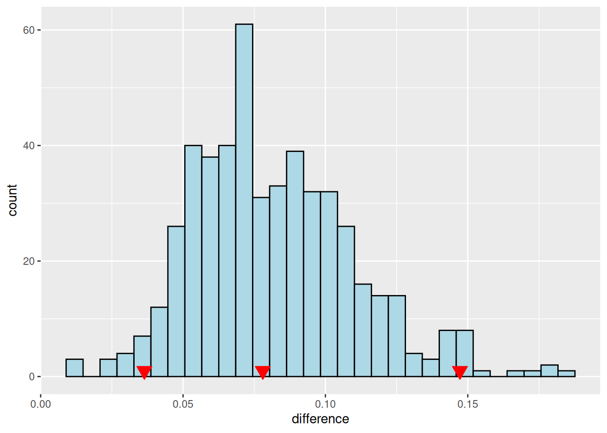
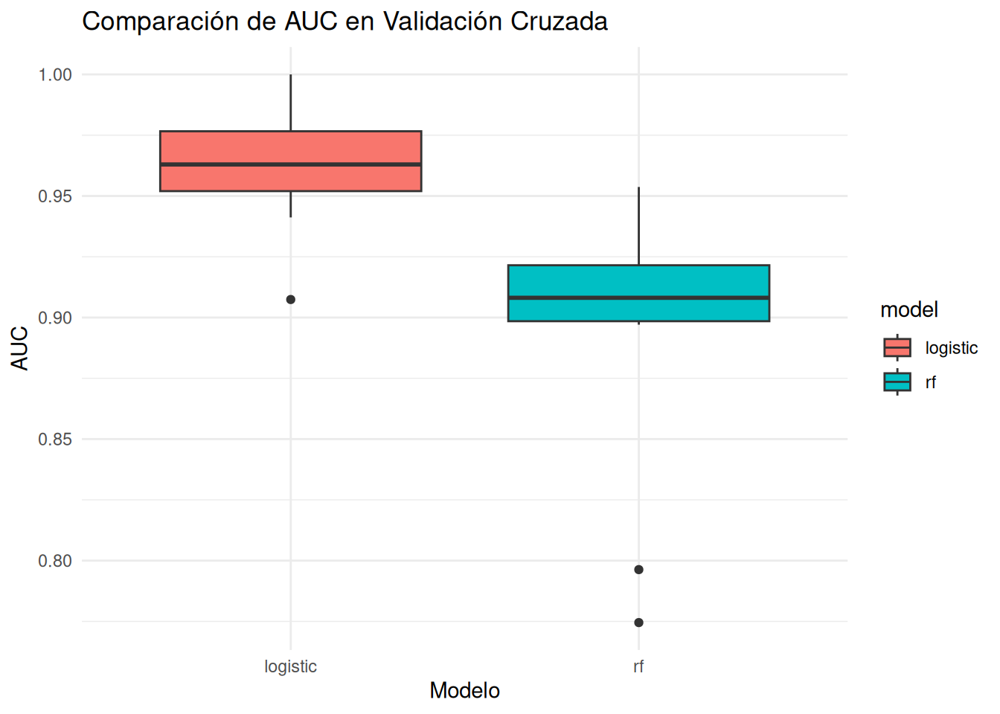

Comparaciones de AUC para modelos de clasificación en tidymodels
Author
Gustavo Gimenez
1 Exploración de datos
Se utilizan los datos de Carseats de la librería ISLR un benchmark muy utilizado. Un conjunto de datos con 400 filas y 11 variables. Correspondiente a la venta de asientos o sillitas para acomodar a los bebés en el auto.
Sales CompPrice Income Advertising Population Price ShelveLoc Age Education
1 9.50 138 73 11 276 120 Bad 42 17
2 11.22 111 48 16 260 83 Good 65 10
3 10.06 113 35 10 269 80 Medium 59 12
Urban US
1 Yes Yes
2 Yes Yes
3 Yes Yes
Se utiliza la librería skimr para hacer un EDA completo.
library(skimr)skim(datos)
Data summary
Name
datos
Number of rows
400
Number of columns
11
_______________________
Column type frequency:
factor
3
numeric
8
________________________
Group variables
None
Variable type: factor
skim_variable
n_missing
complete_rate
ordered
n_unique
top_counts
ShelveLoc
0
1
FALSE
3
Med: 219, Bad: 96, Goo: 85
Urban
0
1
FALSE
2
Yes: 282, No: 118
US
0
1
FALSE
2
Yes: 258, No: 142
Variable type: numeric
skim_variable
n_missing
complete_rate
mean
sd
p0
p25
p50
p75
p100
hist
Sales
0
1
7.50
2.82
0
5.39
7.49
9.32
16.27
▁▆▇▃▁
CompPrice
0
1
124.97
15.33
77
115.00
125.00
135.00
175.00
▁▅▇▃▁
Income
0
1
68.66
27.99
21
42.75
69.00
91.00
120.00
▇▆▇▆▅
Advertising
0
1
6.64
6.65
0
0.00
5.00
12.00
29.00
▇▃▃▁▁
Population
0
1
264.84
147.38
10
139.00
272.00
398.50
509.00
▇▇▇▇▇
Price
0
1
115.80
23.68
24
100.00
117.00
131.00
191.00
▁▂▇▆▁
Age
0
1
53.32
16.20
25
39.75
54.50
66.00
80.00
▇▆▇▇▇
Education
0
1
13.90
2.62
10
12.00
14.00
16.00
18.00
▇▇▃▇▇
Se observan 3 variables clasificatorias tipo factor y 8 numéricas.
Se va a clasificar la variable de acuerdo a si la venta es alta o no sobre la columna Sales. De manera que cuando la variable es mayor a 8 (un poco mayor a la media) sea alta y cuando es menor baja. Ésta va a ser nuestra variable de respuesta.
datos$ventas_altas <-ifelse(test = datos$Sales >8, yes ="Si", no ="No")# Conversión de la variable respuesta a tipo factordatos$ventas_altas <-as.factor(datos$ventas_altas)# Una vez creada la nueva variable respuesta se descarta la originaldatos$Sales =NULL
Determinar si es muy importante el desbalance
library(tidyverse)
── Attaching core tidyverse packages ──────────────────────── tidyverse 2.0.0 ──
✔ dplyr 1.1.4 ✔ readr 2.1.5
✔ forcats 1.0.0 ✔ stringr 1.5.1
✔ ggplot2 3.5.1 ✔ tibble 3.3.0
✔ lubridate 1.9.3 ✔ tidyr 1.3.1
✔ purrr 1.0.2
── Conflicts ────────────────────────────────────────── tidyverse_conflicts() ──
✖ dplyr::filter() masks stats::filter()
✖ dplyr::lag() masks stats::lag()
ℹ Use the conflicted package (<http://conflicted.r-lib.org/>) to force all conflicts to become errors
── Conflicts ───────────────────────────────────────── tidymodels_conflicts() ──
✖ scales::discard() masks purrr::discard()
✖ dplyr::filter() masks stats::filter()
✖ recipes::fixed() masks stringr::fixed()
✖ dplyr::lag() masks stats::lag()
✖ yardstick::spec() masks readr::spec()
✖ recipes::step() masks stats::step()
• Learn how to get started at https://www.tidymodels.org/start/
library(yardstick)
Se divide el conjunto de datos en datos de entrenamiento y datos de testeo por defecto es 0.75 de entrenamiento y 0.25 de testeo. El objetivo es predecir las ventas altas de las sillitas.
2.1 Comparación de los modelos de regresión logística y random forest
# Se establece el modelo de regresión logisticalogistic_model <-logistic_reg() %>%set_engine("glm") %>%set_mode("classification")# Se establece el modelo de random forestrf_model <-rand_forest() %>%set_engine("ranger", probability =TRUE) %>%set_mode("classification")
Se declara el flujo de trabajo (workflow) para uno y otro modelo
# Workflow para regresión logísticalogistic_wf <-workflow() %>%add_model(logistic_model) %>%add_formula(ventas_altas ~ .)# Workflow para random forestrf_wf <-workflow() %>%add_model(rf_model) %>%add_formula(ventas_altas ~ .)
Se ajustan los datos de entrenamiento con la regresión logística.
logistic_fit <-fit(logistic_wf, data = train_data)rf_fit <-fit(rf_wf, data = train_data)
Se ajustan y comprueban sobre los datos de testeo.
logistic_pred <-predict(logistic_fit, testing_data, type ="prob",) %>%bind_cols(testing_data)rf_pred <-predict(rf_fit, testing_data, type ="prob") %>%bind_cols(testing_data)
# Para regresión logísticalogistic_auc <- logistic_pred %>%roc_auc(truth = ventas_altas, .pred_Si, event_level ="second")# Para random forestrf_auc <- rf_pred %>%roc_auc(truth = ventas_altas, .pred_Si, , event_level ="second")
2.3 Comparación de la significancia de AUC mediante el método de bootstrap
En el método de bootstraping se utiliza los datos de entrenamiento para hacer un muestreo con reposición del mismo tamaño que el original.
library(rsample)library(yardstick)# Configurar bootstrap (100-1000 repeticiones)boot_samples <-bootstraps(train_data, times =500)# Función para calcular AUC en cada remuestracompute_auc <-function(split) {# Ajustar modelos logistic_fit <-fit(logistic_wf, analysis(split)) rf_fit <-fit(rf_wf, analysis(split))# Predecir en muestra de evaluación logistic_pred <-predict(logistic_fit, assessment(split), type ="prob") rf_pred <-predict(rf_fit, assessment(split), type ="prob")# Calcular AUCs logistic_auc <-roc_auc_vec(truth =assessment(split)$ventas_altas,estimate = logistic_pred$.pred_Si) rf_auc <-roc_auc_vec(truth =assessment(split)$ventas_altas,estimate = rf_pred$.pred_Si)# Retornar diferenciatibble(logistic_auc = logistic_auc,rf_auc = rf_auc,difference = rf_auc - logistic_auc )}# Aplicar a todas las muestras bootstrapauc_results <-map_df(boot_samples$splits, compute_auc)# Intervalo de confianza bootstrap para la diferenciaquantile(auc_results$difference, probs =c(0.025, 0.975))
2.5% 97.5%
0.0364193 0.1472413
puntos <-as_tibble(quantile(auc_results$difference, probs =c(0.025,0.5, 0.975)))puntos <- puntos |>mutate(count =c(1,1,1)) |>rename(difference = value)
En éste bootstrap de la diferencia se obtuvo un intervalo de confianza del 95% el valor central es 0.0780194 como el intervalo va desde 0.0364193 a 0.1472413, no incluye al cero por lo tanto hay diferencias significativas.
Gráfico de histograma sobre la diferencia con los 500 bootstrap
#Éste gráfico siempre armo par bootstrap me encantaggplot(auc_results, aes(x=difference)) +geom_histogram(color ="black", fill ="lightblue") +geom_point(data=puntos, aes(x = difference, y = count),pch=25, size=4,fill="red",colour="red")
`stat_bin()` using `bins = 30`. Pick better value with `binwidth`.

2.4 Utilizando el método de DeLong
El método de Delong es bastante específico y se puede obtener así.
library(pROC)
Type 'citation("pROC")' for a citation.
Adjuntando el paquete: 'pROC'
The following objects are masked from 'package:stats':
cov, smooth, var
# Obtener predicciones para ambos modeloslogistic_roc <-roc(testing_data$ventas_altas, logistic_pred$.pred_Si)
Setting levels: control = No, case = Si
Setting direction: controls < cases
# Test de DeLong para comparar AUCsdelong_test <-roc.test(logistic_roc, rf_roc, method ="delong")delong_test
DeLong's test for two correlated ROC curves
data: logistic_roc and rf_roc
Z = 2.4313, p-value = 0.01504
alternative hypothesis: true difference in AUC is not equal to 0
95 percent confidence interval:
0.009457087 0.088103889
sample estimates:
AUC of roc1 AUC of roc2
0.9342704 0.8854899
Se rechaza, hay diferencias (bastante parecidas a la del bootstrap )
2.5 Tercera opción validación cruzada pareada
library(doParallel) # Para procesamiento paralelo
Cargando paquete requerido: foreach
Adjuntando el paquete: 'foreach'
The following objects are masked from 'package:purrr':
accumulate, when
Cargando paquete requerido: iterators
Cargando paquete requerido: parallel
# Configurar validación cruzada, cambié el número de fold para poder hacer # las comparaciones.folds <-vfold_cv(train_data, v =10, strata = ventas_altas)# Función para obtener AUC en cada foldget_cv_auc <-function(split) {# Entrenar modelos logistic_fit <-fit(logistic_wf, analysis(split)) rf_fit <-fit(rf_wf, analysis(split))# Predecir logistic_pred <-predict(logistic_fit, assessment(split), type ="prob") rf_pred <-predict(rf_fit, assessment(split), type ="prob")# Calcular AUCstibble(fold = split$id,logistic =roc_auc_vec(assessment(split)$ventas_altas, logistic_pred$.pred_Si, ,event_level ="second"),rf =roc_auc_vec(assessment(split)$ventas_altas, rf_pred$.pred_Si, event_level ="second") )}
Calcular las métricas para cada fold .
# Calcular métricas en todos los foldsregisterDoParallel() # Activar paralelizacióncv_results <-map_df(folds$splits, get_cv_auc)stopImplicitCluster() # Desactivar paralelización# Test t pareadot_test_result <-t.test(cv_results$logistic, cv_results$rf, paired =TRUE)t_test_result
Paired t-test
data: cv_results$logistic and cv_results$rf
t = 5.0323, df = 9, p-value = 0.0007072
alternative hypothesis: true mean difference is not equal to 0
95 percent confidence interval:
0.03955193 0.10415093
sample estimates:
mean difference
0.07185143
En este caso, indica mayor diferencia.
# Visualizacióncv_results %>%pivot_longer(cols =c(logistic, rf), names_to ="model", values_to ="auc") %>%ggplot(aes(x = model, y = auc, fill = model)) +geom_boxplot() +labs(title ="Comparación de AUC en Validación Cruzada",y ="AUC", x ="Modelo") +theme_minimal()

3 Predicción final teniendo en cuenta el mejor modelo
Ajuste con todos los datos de entrenamiento
logistic_fit <-fit(logistic_wf, data = train_data)
Predicción sobre los datos de testeo
logistic_pred <-predict(logistic_fit, testing_data, type ="prob") %>%bind_cols(testing_data)
Evaluación
roc_auc(logistic_pred, truth = ventas_altas, .pred_Si, event_level ="second")